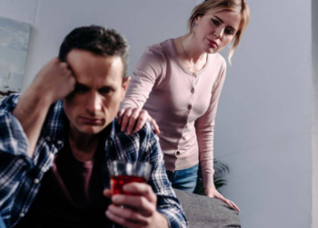

Созависимость с пьющим человеком
- Алкогольная созависимость
- Созависимость в семье
- Признаки созависимости
- Последствия созависимости
- Лечение созависимости
Если у кого-то из близких формируется хроническая алкогольная зависимость, то метаморфозы происходят в жизни каждого члена семьи. Изменения происходят не моментально, а постепенно на протяжении нескольких лет. Рушатся судьбы всех близких алкоголика. С детства внушаются понятия сочувствия и помощи больным людям. Алкоголик это тяжело болеющий человек. Но в отношении алкозависимых принципы помощи и сострадания иногда работают неправильно. Постепенно желание помочь хроническому алкоголику перерастает в созависимость.
Большинству россиян слово и понятие “созависимость” неизвестны и непонятны. В действительности в каждой семье алкоголика есть созависимые люди.
Рассмотрит обстоятельства вызывающие возникновение созависимости в семьях алкоголиков. Что необходимо делать для защиты близких от этого расстройства психики.
АЛКОГОЛЬНАЯ СОЗАВИСИМОСТЬ
У людей, вынужденных постоянно сосуществовать и общаться с алкоголиками, формируется ошибочное мнение, что зависимые не в состоянии адекватно воспринимать окружающий мир, и нуждаются в постоянной опеке и помощи. В реальности большинство алкоголиков отдают себе отчет во всех совершаемых ими действиях. Постоянный поиск возможности очередного употребления спиртных напитков развивает у них новые способности: лживость и изворотливость. Опрометчиво считать, что алкоголики не понимают и не осознают свои действия и поступки. Согласно статистике под созависимость чаще всего попадают матери и жены алкоголиков. Часто у созависимых развивается и алкоголизм. Мужья женщин, страдающих алкогольной зависимостью, реже становятся созависимыми. Выйти из состояния созависимости без помощи психологов почти невозможно.
СОЗАВИСИМОСТЬ В СЕМЬЕ
Не следует упускать из виду, что у людей, находящихся в состоянии созависимости меняются понятия моральных и материальных ценностей. Центром их жизни становится алкоголик, который и вызвал формирование этого состояния у них. Постепенно созависимый перестает быть полноценной личностью. Собственные дети и родные отходят на второй план. Созависимые становятся тенью алкоголика и не понимая того выполняют все его прихоти. Они стремятся оградить алкозависимого от друзей, проблем на работе и плохо успевающих в школе детей. Алкоголика подобная ситуация вполне устраивает, ему максимально комфортно и выгодно так жить.
ПРИЗНАКИ СОЗАВИСИМОСТИ
Сосредоточение внимания на пьющем члене семьи один из самых заметных признаков формирования созависимости. Психологическая модель поведения созависимого подразделяется на три основных вида:
- жертва
- преследователь
- спасатель.
В состоянии “жертвенности” созависимый постоянно высказывает свои соображения о том, как ему тяжело жить с алкоголиком, просит о помощи. Но при этом отказывается принимать какие-либо конкретные меры для лечения алкоголика или разрыва связи с ним.
У “преследователя” навязчивая идея вылечить алкоголика. Но пути к началу избавления от зависимости выбираются неверные.
“Спаситель” убежден, что пьющий человек без него пропадет. Но помощь оказывается таким образом, чтобы алкоголик зависел еще больше от “спасителя”.
Основные признаки любого вида созависимой:
- Проявления повышенной эмоциональной раздражительности в периоды ссор, вплоть до драк. Многие действия выполняются напоказ. В качестве примера можно привести: демонстративное выливание спиртных напитков и разбивание бутылок. Но при этом созависимый не позволяет другим людям делать что-либо подобное. В подобных случаях он встает на защиту алкоголика и готов принести себя в жертву.
- из разговорной речи созависимого исчезает местоимение “я”, употребляется только “мы”.
- постоянное чувство тревоги. Созависимый живет с постоянным ожиданием того, что алкоголик опять напьется.
- постоянный поиск различных способов лечения зависимого от алкоголя. Причем часто абсолютно абсурдных и бесполезных. Тем самым только усугубляя алкоголизм.
- созависимый стремиться взять под свой контроль все сферы жизни алкоголика. Созависимый может проверять карманы, просматривать телефон и т.д. В тяжелых случаях дело может дойти до слежки.
- повышенная скрытность. Созависимого одолевает страх, что кто-то может узнать о семейных проблемах. Люди прекращают сами ходить в гости и приглашать кого-либо к себе. Постоянно пытаются найти оправдания алкоголизму члена семьи.
- созависимый полностью перестает доверять алкоголику. Все решения он принимает за алкозависимого самостоятельно. Алкоголик лишается денежных средств, контролируется каждый выход из дома.
Объяснение подобному поведению вполне можно найти. Человек находится в постоянном напряжении и это своеобразный способ защиты. Как бы парадоксально это не звучало, но такими поступками созависимый подталкивает алкоголика на употребление спиртных напитков. Современные наркологи предпочитают одновременно проводить терапию хронического алкоголизма и психотерапевтическое лечение созависимости.
ПОСЛЕДСТВИЯ СОЗАВИСИМОСТИ
Необходимо четко понимать, что созависимость это болезнь. Проявления которой только усложняют проблемы хронических алкоголиков:
- Созависимый позволяет алкоголику думать, что у него проблем нет. Алкоголики и так почти всегда отрицают наличие зависимости. А благодаря находящемуся рядом созависимому алкоголик в принципе не видит своей проблемы. Тем самым болезнь прогрессирует, переходит с одной стадии на другую, и лечение осложняется.
- Алкоголику очень удобно жить с созависимым. За него решаются все проблемы. Ему находят оправдание в любой ситуации, какие бы отвратительные поступки он не совершал. Впоследствии для созависимого будет особенно обидно за то, что всю вину за свой алкоголизм, пьющий человек возложит на него.
- Поведение созависимого усложняет ситуацию, снижает мотивацию алкоголика на лечение. Упускает время, когда от алкогольной зависимости проще избавиться.
Но созависимый создает ряд серьезных проблем и для себя. У человека постепенно снижается самооценка. Возрастает чувство стыда перед близкими и друзьями. Находясь в постоянном стрессе он самоизолируется от окружающих. Одолевающее его чувство отчаяния не позволяет найти выход из сложившейся ситуации. Человек все глубже погружается в проблемы. Результатом чего становятся начальные симптомы психосоматического расстройства, проявляющиеся в:
- нарушении деятельности внутренних органов и систем;
- перепадах настроения;
- сосудистых и мышечных спазмах;
- головных болях;
- нарушениях ритмов сна и бодрствования.
Жизнь в постоянном напряжении провоцирует развитие ухудшение состояния здоровья созависимого. Возрастает риск возникновения:
- инфарктов и инсультов;
- язвы желудка и двенадцатиперстной кишки;
- обострения хронических болезней;
- расстройств психики;
- сахарного диабета.
Для лечения созависимости требуется помощь психотерапевтов. Своевременное обращение к высококлассным специалистам позволят снизить страдания созависимого и предупредить развитие проблем со здоровьем. Психотерапия не только облегчит состояние человека, но даст возможность ему мотивировать, проживающего с ним алкоголика на лечение от зависимости. Или просто принять решение и прервать эти отношения. Созависимость это серьезное заболевание, требующее лечения.
ЛЕЧЕНИЕ СОЗАВИСИМОСТИ
Лечением созависимости занимаются психотерапевты. Главным условием эффективности терапии является осознание человеком самого факта существования болезни. При лечение созависимости медикаментозные препараты используются лишь только когда болезнь переросла в психическое расстройство. Существуют два основных способа терапии созависимы:
- Индивидуальные психотерапевтические сеансы. Во время посещения психолога пациент обучается методам самокоррекции своего состояния, не связанным с другими людьми.
- Семейная психотерапия. Направлена на формирование новых поведенческих моделей, основанных на взаимоподдержке и семейном взаимодействии.
Основная цель психотерапии убедить человека отказаться от возложенной на себя спецмиссии по спасению алкоголика, проживающего рядом с ним. На индивидуальных и групповых сеансах формируются навыки здоровых семейных отношений, вырабатываются иные схемы поведения с алкоголиком. Постепенно созависимый начинает понимать, что у него есть собственные желания и старается их реализовывать. Возрастает уровень самооценки.
Хорошо зарекомендовал метод терапии, основанный на одновременном лечении созависимого и его родственника алкоголика. В подобных случаях привлекаются наркологи, психотерапевты, социальные работники. Пациенты взаимодействуют с людьми преодолевшими болезнь. Часто созависимые своими поступками мешают алкоголикам начать курс лечения, а после прохождения курса терапии не дают необходимой поддержки, а только способствуют срывам. Совместное лечение дает шанс на новую жизнь и алкоголику, и созависимому.
Созависимость опасное психологическое заболевание, способное сделать жизнь человека невыносимой. Продолжительность курса терапии созависимости обусловлена психологическими особенностями каждого пациента и может продлиться от двух до шести месяцев. Независимо от выбранного метода лечения, после завершения терапии созависимый становится самодостаточной личностью и уверенным в себе человеком.